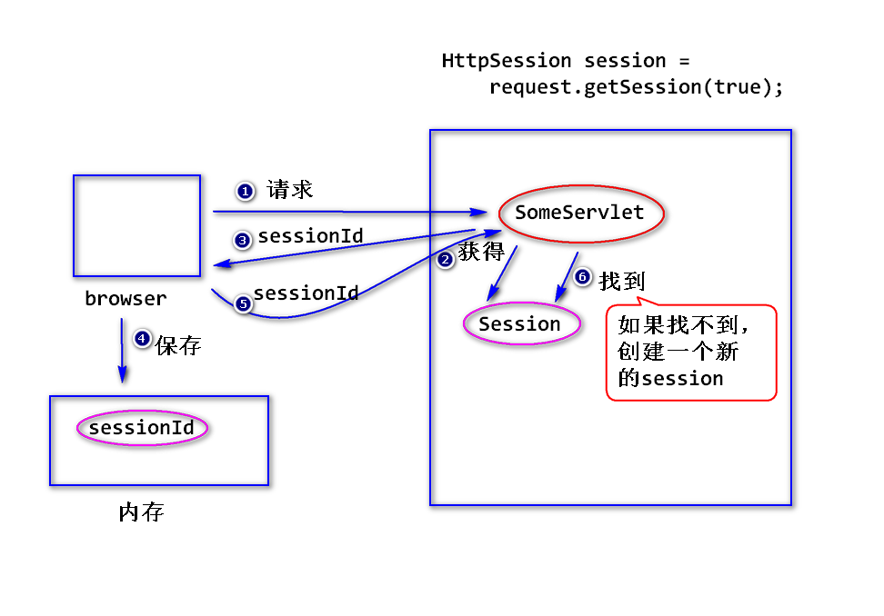
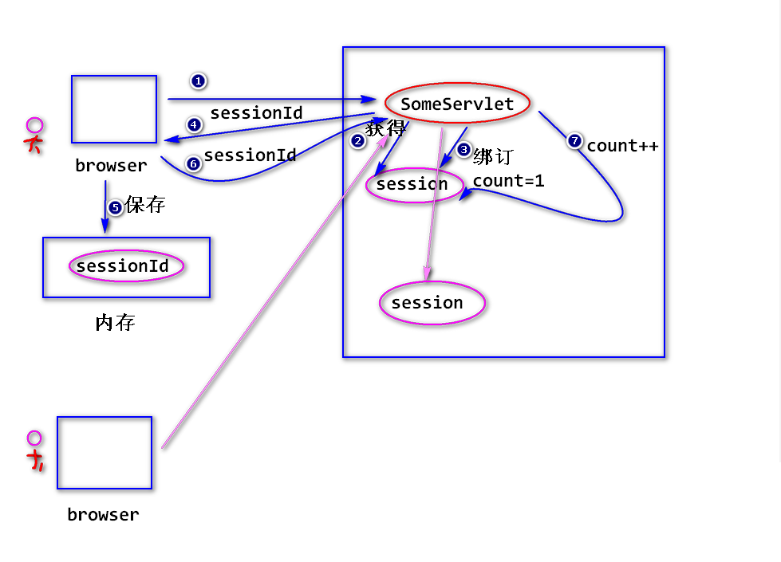
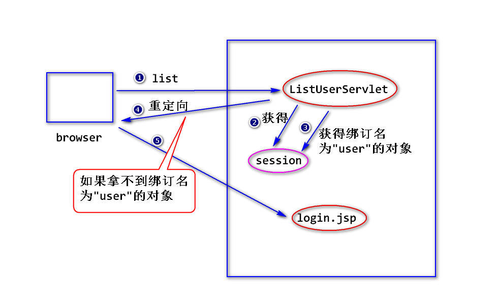

1.Cookie的限制
a.可以被用户禁止
b.不安全
对于敏感数据，一定要加密。
c.只能存放少量数据
大约4k左右
d.数量也有限制
浏览器大约能存放几百个cookie
e.只能存放字符串
2. Session(会话)
(1)什么是Session?
服务器端为了保存用户的状态而创建的一个特殊的对象(即session对象)。
当浏览器第一次访问服务器时，服务器会创建session对象(该
对象有一个唯一的id,一般称之为sessionId),接下来服务器会将
sessionId以cookie的方式发送给浏览器。
当浏览器再次访问服务器时，会将sessionId发送过来，服务器
就可以依据sessionId找到对应的sessinon对象。
(2)如何获得session对象?
1)HttpSession s = request.getSession(boolean flag);
HttpSession是一个接口。
a.当flag为true时，先查看请求当中有没有sessionId,如果没有，就会
创建一个session对象。如果有sessionId,就会依据sessionId去查找
对应的session对象，如果找到了就返回该对象，找不到则会创建一个
新的session对象。
b.当flag为false时,先查看请求当中有没有sessionId,如果没有，返回
null。如果有sessionId,就会依据sessionId去查找对应的session对象，如果找到了就返回该对象，找不到，返回null。

2)HttpSession s = request.getSession();
等价于 request.getSession(true);
(3)常用方法
session.setAttribute(String name,Object obj);
Object session.getAttribute(String name);
session.removeAttribute(String name);

(4)session超时
a.什么是session超时?
服务器会将空闲时间过长的session对象删除掉。
注：
为了节省内存空间。
大部分服务器默认的超时时间长度为30分钟。
b.如何修改超时时间长度?
方式一 修改web.xml
<session-config>
<session-timeout>30</session-timeout>
</session-config>
方式二 编程的方式
session.setMaxInactiveInterval(int seconds);
设置两次请求之间最大的时间间隔
(5)删除session
session.invalidate();
(6)session验证
step1. 登录成功之后，在session对象上绑订一些数据，比如
session.setAttribute("user",user);
step2.当用户访问需要保护的资源时，进行session验证,比如
Object obj = session.getAttribute("user");
if(obj == null){
//没有登录
response.sendRedirect("login.jsp");
}

(7)比较session与cookie
session相对于cookie,优点：安全、可以存放大量的数据、支持更丰富的
数据类型。缺点是session会占用服务器端的内存空间，如果session对象
过多，会占用过多的内存空间。
练习
写一个servlet,输出用户上一次访问的时间。如果是第一次访问，输出
“你是第一次访问”。